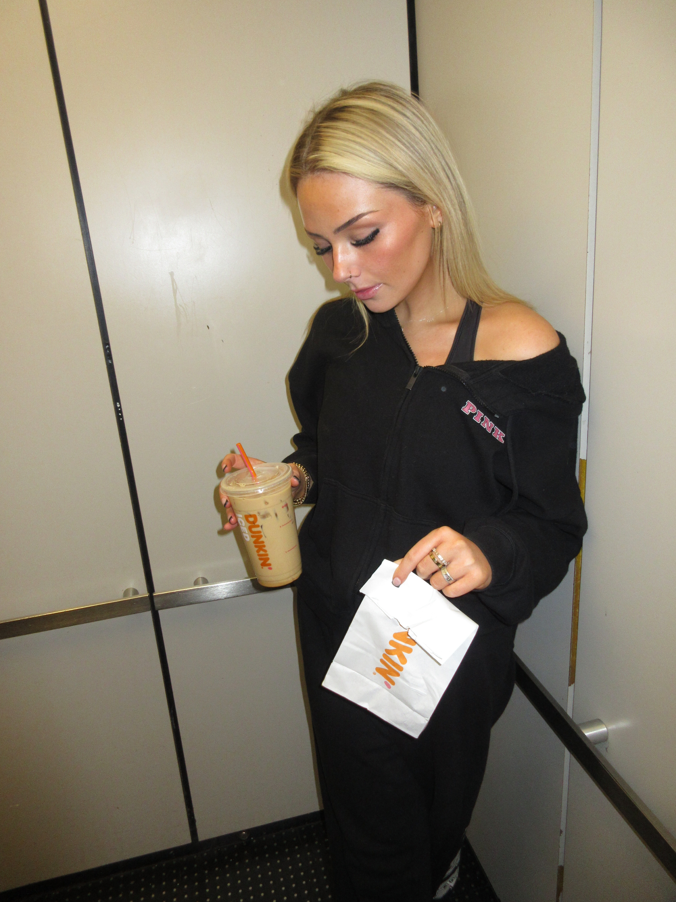
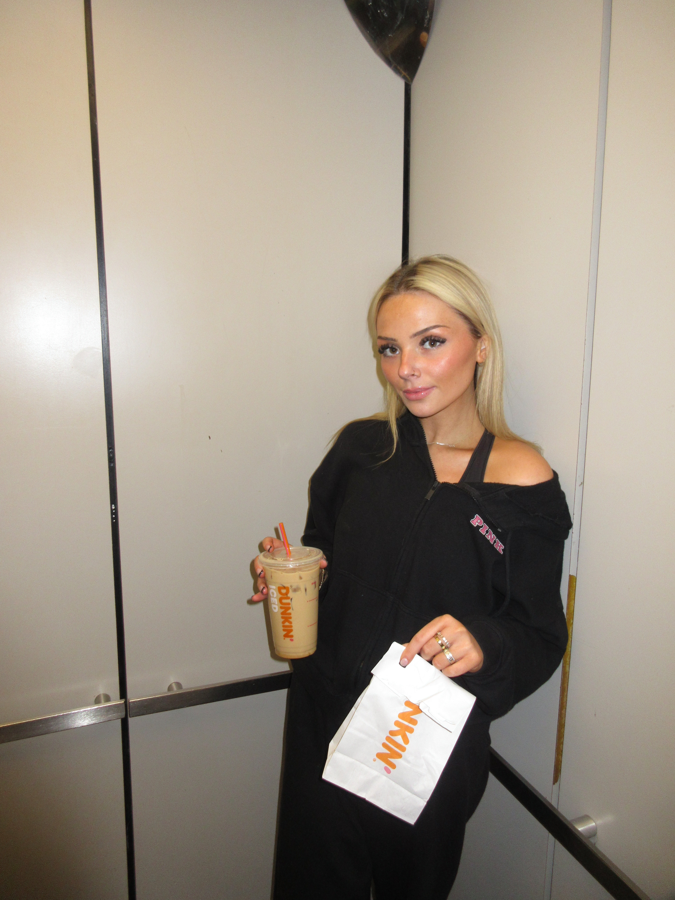
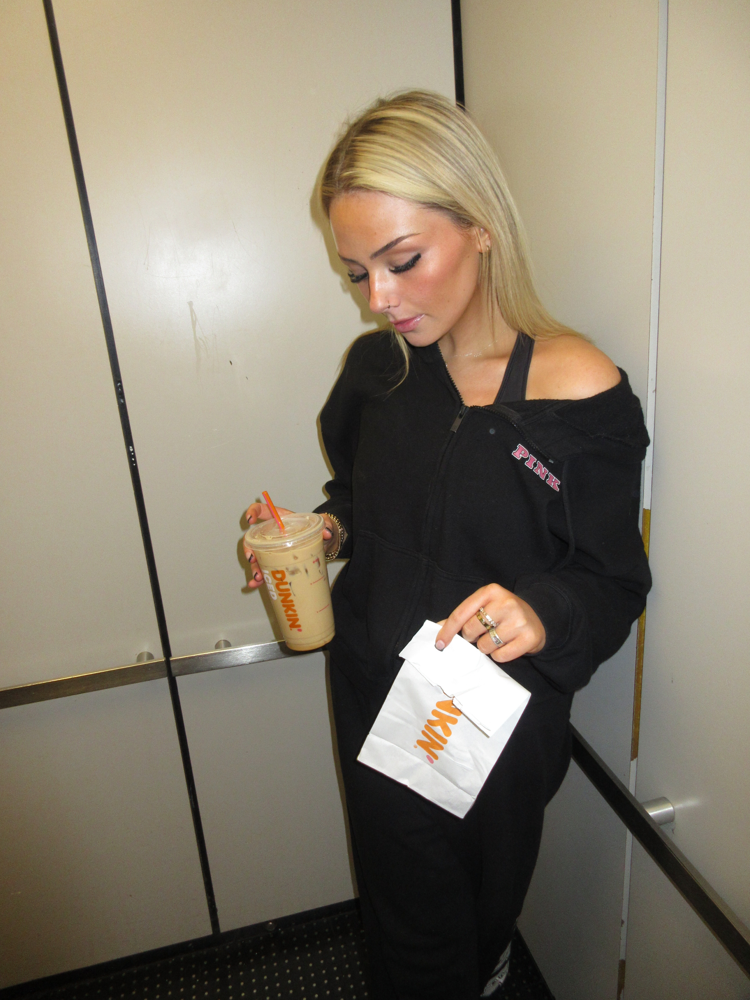
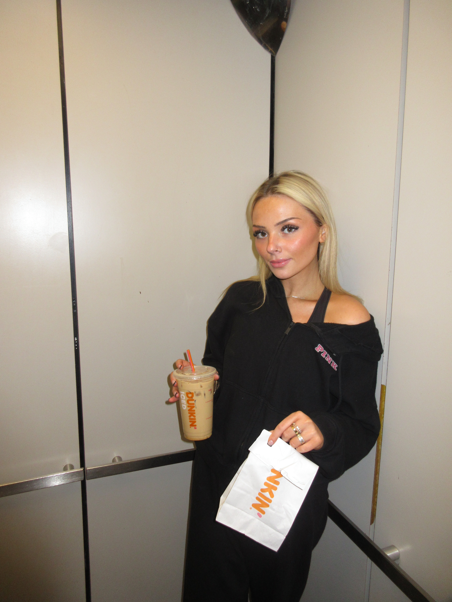

ENTRY 5
My ritual of getting coffee at Dunkin' goes beyond simply grabbing a cup of caffeine. It involves small, repetitive steps that form a comforting routine in my day. It begins with the anticipation of the taste and the energy boost, followed by the familiar process of walking into Dunkin', knowing exactly what I am going to order. The sensory experience is part of the ritual too—the smell of brewing coffee, the sound of baristas working, and the hum of the space. The act of receiving my drink, the first sip, and continuing on my day brings a moment of focus and comfort, creating a sense of structure in my morning. The ritual is a calming, predictable routine in a busy life, grounding myself in a moment of familiarity before the rest of the day unfolds.


 


